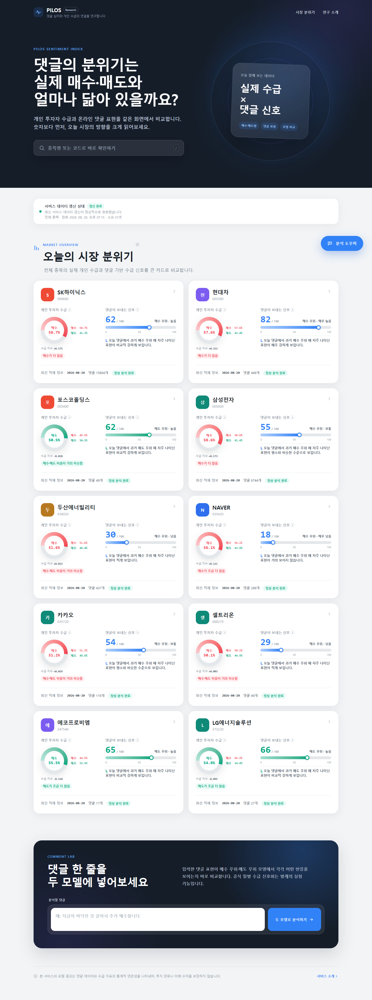
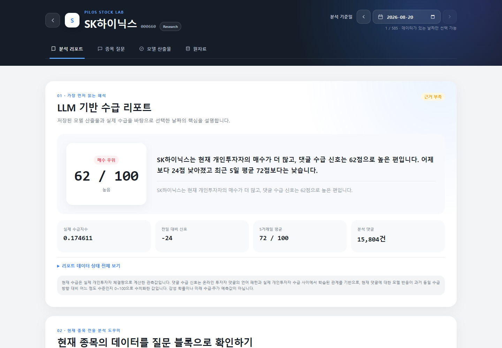
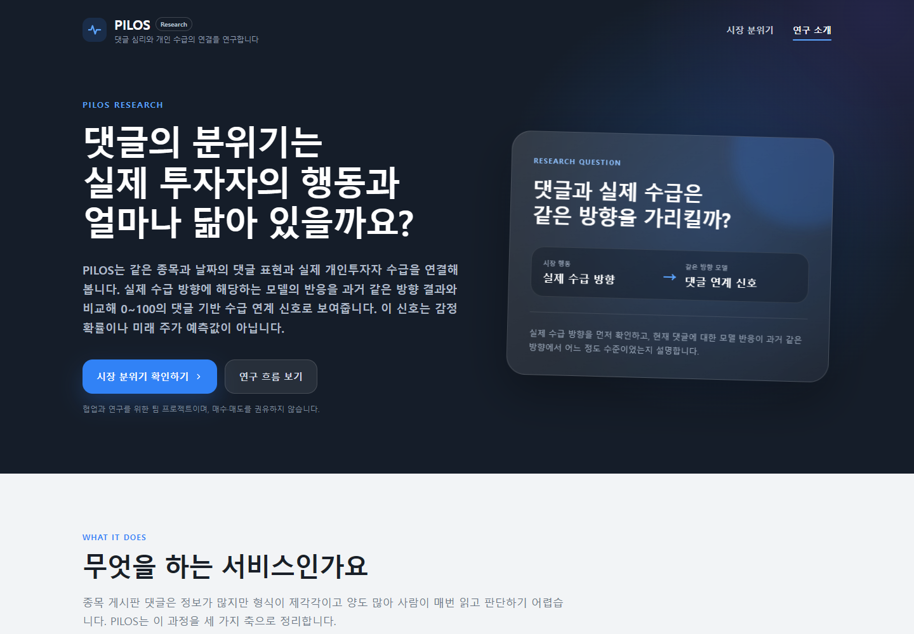
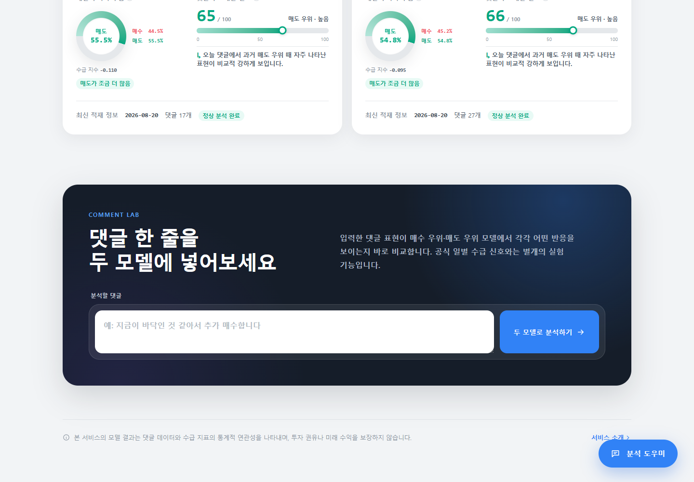

PROJECT DETAIL
PILOS Sentiment Index
같은 날의 종목 댓글과 개인투자자 매매를 함께 보고, 두 데이터 사이에서 관측된 통계적 연관성을 종목별로 분석하고 설명하는 4인 팀 서비스입니다.
GitHub 저장소01 / 프로젝트 개요
많은 종목 댓글과 관측된 개인투자자 매매를 같은 날짜 기준으로 함께 이해할 수 있게 했습니다.
서비스 문제
많은 종목 댓글을 일일이 읽는 것만으로는 그날의 댓글 표현과 관측된 개인투자자 매매가 어떤 관계로 함께 나타났는지 쉽게 파악하기 어려웠습니다.
만든 서비스
같은 종목·일자의 댓글과 개인투자자 매매를 함께 보고, 두 데이터 사이에서 관측된 통계적 연관성을 종목별 분석 결과와 설명으로 제공했습니다.
사용자가 확인할 수 있는 정보
- 개인투자자 매수·매도 우세도와 개인투자자 매매 우세
- 관측된 매매 우세에 해당하는 댓글·매매 연관 점수와 수준
- 댓글 분석 모델 원출력값과 주요 영향 단어
- 직전 비교 가능일·최근 비교 가능일 평균과 일별 댓글·매매 해설
- 단일 댓글에 대한 매수 우세일·매도 우세일 모델 반응 확인
기획 변화
- 교육과정의 ‘댓글 심리 점수’ 주제에서 출발해 수동 감정·방향 라벨 방식을 검토했습니다.
- 주관적인 라벨 기준과 수작업 부담을 확인한 뒤, 실제 시장 데이터를 학습 목표로 사용하는 방향을 검토했습니다.
- 미래 방향 예측 구조도 검토했지만 제한된 데이터로 검증·해석할 수 있는 범위를 넘어설 수 있다고 판단했습니다.
- 미래 예측을 과장하지 않고, 같은 날 관측된 댓글 표현과 개인투자자 매매 우세의 통계적 연관성을 분석하는 현재 문제로 구체화했습니다.
분석 범위
이 프로젝트는 일반적인 긍정·부정 감성분류가 아닙니다. 미래 주가나 개인투자자 매매를 예측하거나 실제 매수·매도 확률을 계산하지 않으며, 투자 종목이나 매매 시점을 추천하지 않습니다. 댓글이 실제 매매 행동을 일으켰다는 인과관계도 주장하지 않습니다.
분석 데이터종목·일자별 온라인 댓글 + 같은 종목·일자의 개인투자자 매수·매도 정보
02 / 실제 서비스 화면
분석 과정의 결과를 실제 사용자 화면까지 연결했습니다.
실제 서비스에서 분석 결과가 어디에 사용됐는지를 보여주는 화면입니다.
{kind=link}

01 / 종목별 분석 현황
분석 대상 종목별로 최근 저장된 댓글·매매 분석 결과와 결과 제공 상태를 확인합니다. 시장 전체를 하나의 지표나 추천 순위로 요약하지 않습니다.
{kind=link}

02 / 종목별 댓글·매매 분석
선택한 종목의 개인투자자 매매 우세, 댓글·매매 연관 점수, 주요 영향 단어와 저장된 일별 댓글·매매 해설을 확인합니다. 해설은 앞 단계에서 확정한 정형 근거를 문장으로 정리합니다.
{kind=link}

03 / 서비스 분석 기준
프로젝트가 어떤 관계를 분석하는지와 댓글·매매 연관 점수가 확률·정확도·미래 예측값이 아니라는 해석 범위를 서비스 안에서 설명합니다.
{kind=link}

04 / 댓글 한 줄 모델 체험
사용자가 입력한 한 줄 댓글에서 매수 우세일 모델과 매도 우세일 모델이 인식한 표현의 반응값을 각각 확인합니다. 공식 일별 댓글·매매 연관 점수와는 별개의 모델 반응 체험입니다.
03 / 프로젝트 개념도
학습 구조와 서비스 추론 구조를 분리해 이해합니다.
- 직접 구현
- 직접 통합
- 팀 / 공용
A. 모델 학습 구조
직접 구현·통합댓글 표현과 같은 날의 개인투자자 매수·매도 우세도를 하나의 학습 구조로 연결했습니다.
댓글 입력 X
개인투자자 매매 Y
댓글 TF-IDF가 Ridge의 입력이고, 개인투자자 매수·매도 우세도는 학습 정답입니다. 두 데이터는 같은 종목·일자를 기준으로 연결됩니다. 모델은 댓글이 미래 매매를 만든다고 학습하는 것이 아니라, 보유 데이터셋에서 댓글 표현과 같은 날의 개인투자자 매매 우세가 함께 나타난 통계적 관계를 학습합니다.
B. 서비스 추론 구조
직접 구현·통합서비스에서는 신규 댓글을 검증된 모델과 상태 계약을 거쳐 사용자 결과로 바꿉니다.
입력 처리 · 직접 구현
- 신규 댓글
- 전처리 · Kiwi
- 종목·일자별 댓글 분석 단위
두 모델 계산 · 직접 구현
- 학습된 TF-IDF
- 매수 우세일·매도 우세일 모델
- 모델 원출력값 · 주요 영향 단어
결과 관리 · 직접 구현
- 관측된 개인투자자 매매 우세로 결과 선택
- 결과 제공 상태 · DB 저장
- Calibration · 댓글·매매 연관 점수
서비스 제공
- 검증된 정형 근거
- 일별 댓글·매매 해설
- Flask 서비스
해설 생성: 직접 구현·통합
Flask 화면: 팀 / 공용
같은 댓글 분석 단위를 두 모델이 각각 계산한 뒤, 관측된 개인투자자 매매 우세에 해당하는 모델 결과를 선택합니다. 개인투자자 매매 정보는 Ridge의 텍스트 입력이 아니며, 선택된 원출력값을 같은 방향·모델 버전의 기준분포에 상대화해 댓글·매매 연관 점수로 변환합니다. 이 점수는 확률·정확도·미래 개인투자자 매매 예측이 아닙니다.
04 / 내가 맡은 역할
분석 파이프라인을 직접 구현하고, 결과가 서비스까지 이어지는 실행 흐름을 통합했습니다.
4인 팀의 팀장으로 전체 기술 흐름을 관리했습니다. 개인 구현 범위는 댓글이 모델 입력으로 바뀌는 과정부터 모델 검증·학습·추론, 결과 제공 상태와 사용자용 변환, 일별 댓글·매매 해설, 최상위 자동화까지 이어집니다.
1. 모델 입력과 데이터 품질
- 댓글 전처리
- Kiwi 토큰화와 도메인 표현 보완
- 종목·일자별 댓글 분석 단위
- TF-IDF 벡터화와 입력 검수
2. 모델 개발과 검증
- Ridge / ElasticNet 후보 비교
- 날짜 그룹 랜덤 검증과 워크포워드 검증
- 최종 Ridge text-only 선정
- 전체 데이터셋 재학습
3. 서비스 추론 계약
- Vectorizer + Ridge artifact
- 매수 우세일·매도 우세일 모델 추론
- 주요 영향 단어와 영향값 산출
ready / insufficient_features에 대응하는 결과 제공 상태- 결과 저장과 calibration 기반 댓글·매매 연관 점수
4. 분석 결과 설명과 Backend 연결
- 정형 근거 생성
- 일별 댓글·매매 해설 생성 계약
- 저장 해설과 Flask 데이터 계약 연결
5. 자동화와 전체 기술 흐름
- 개별 Job을 최상위 실행 흐름으로 통합
- 단계별 실패 경계
- 중복 실행 방지
- 실행 상태·실패 단계 기록
- 팀장으로 데이터 규칙과 완료 조건 조정
팀 / 공용 영역
프로젝트 전체 결과에 포함되지만 개인 단독 구현으로 구분하지 않은 영역입니다.
- 댓글 수집 자체
- 개인투자자 매수·매도 정보 수집 자체
- Flask 웹 UI 전체 구현
- 근거 기반 답변 도우미 전체
05 / 데이터와 모델을 만드는 과정
모델을 고르기 전에, 실제 댓글이 어떤 입력으로 바뀌는지부터 확인했습니다.
이 프로젝트의 모델 입력은 종목·일자별 댓글 분석 단위입니다. 따라서 모델 종류보다 먼저 댓글이 전처리·토큰화·벡터화되는 과정에서 의미가 깨지지 않는지 확인하고, 이후 같은 날짜의 개인투자자 매수·매도 우세도와 연결해 모델 후보를 검증했습니다.
A. 실제 댓글 입력 검수
형태소 분석 결과를 실제 원문과 다시 대조했습니다.
- 댓글 원문
- 기본 전처리
- Kiwi 형태소 분석
- POS/불용어 필터
- 실제 token 검수
- 종목·일자별 댓글 분석 단위
발견한 문제
삼성전자 실제 댓글을 벡터화해 상위 TF-IDF 표현을 확인하던 중, 확인·강조 어미 -잖-이 일부 문장에서 않/VX로 분석되는 사례를 발견했습니다. POS만 보면 정상적인 보조용언처럼 보이기 때문에 단순 품사 필터로는 오분석 여부를 구분하기 어려웠습니다.
대응
- Kiwi token의 시작 위치와 길이로 원문 substring을 다시 확인
- 원문이
잖인데않/VX로 분석된 관찰 사례만 선택적으로 제외 삼전,영차,자사주,액면분할,십만전자등 프로젝트 데이터셋에서 반복되는 표현을 사용자 사전에 보완
의미
형태소 분석 라이브러리를 사용했다는 사실보다, 실제 모델 입력을 다시 확인하고 관찰된 오류를 수정한 과정을 중요하게 봤습니다. 이 규칙이 모든 한국어 형태소 오류를 해결한다고 보지는 않습니다.
B. TF-IDF와 sparse 입력
종목·일자별 댓글 분석 단위를 TF-IDF 희소 벡터로 변환했습니다.
- 같은 종목·일자 댓글 token
- 댓글 분석 단위
- TF-IDF
- Ridge 입력 X
구현 포인트
- 학습 데이터셋의 댓글 분석 단위를 기준으로 TF-IDF vocabulary와 IDF 학습
- 서비스 추론에서도 학습 때 저장한 동일 Vectorizer 사용
- 검수 코드에서는 sparse row를 매번 dense 배열로 풀지 않고
row.indices,row.data의 non-zero 값만 확인
댓글별 TF-IDF 상위 표현을 검수하던 코드가 sparse row를 toarray().flatten()으로 전체 dense 배열로 변환하고 있었습니다. 이를 실제 값이 존재하는 feature만 읽도록 수정했습니다. 별도 성능 수치는 측정하지 않았습니다.
C. 모델 후보와 두 가지 검증
미래 예측 성능과 당일 연관성 재현을 같은 검증으로 설명하지 않았습니다.
비교 후보
- Ridge
- ElasticNet
- text-only
- 댓글 수 feature를 추가한 후보
1) 워크포워드 검증
과거 구간으로 학습하고 이후 월을 검증해 시간이 지나며 댓글량·어휘·개인투자자 매수·매도 우세도 분포가 달라졌을 때 성능이 얼마나 흔들리는지 확인했습니다.
- 검증 구간: 2026년 4월, 5월, 6월, 7월 1~24일
40개 후보 × 2개 모델 × 4개 Fold = 320회평가- 최종 text-only Ridge alpha=1 평균 R² — 매수 우세일 모델: 0.0481, 매도 우세일 모델: 0.0503
2) 날짜 그룹 랜덤 검증
보유 데이터셋 내부에서 같은 시기의 댓글 표현과 당일 개인투자자 매수·매도 우세도의 관계가 어느 정도 재현되는지 별도로 확인했습니다.
- 각 월의 고유 날짜 약 20%를 validation 날짜로 선택
- 같은 날짜의 모든 종목을 train 또는 validation 한쪽에만 배치
- 매수 우세일·매도 우세일 모델에 같은 날짜 split 사용
- 5개 seed 반복
- TF-IDF vocabulary와 IDF도 각 fold의 train 데이터로만 fit
최종 text-only Ridge alpha=1 평균 validation R² — 매수 우세일 모델: 0.206797, 매도 우세일 모델: 0.221247
해석
날짜 그룹 랜덤 검증에서 수치가 더 높았다는 사실을 모델이 새로 좋아졌다고 해석하지 않았습니다. 시간 순서를 강제한 워크포워드에서 성능이 크게 낮아진 결과와 함께 보면서 동시점 연관성은 일부 재현되지만 시간 분포 변화에는 민감하다고 해석했습니다.
D. 최종 Ridge text-only 선택
조금 높은 점수보다 단순하고 일관된 서비스 입력 계약을 선택했습니다.
판단 근거
매도 우세일 모델에서 댓글 수 feature를 추가한 Ridge의 날짜 그룹 랜덤 평균 R²가 text-only보다 약간 높았습니다.
- text + 댓글 수: 약 0.2215
- text-only: 약 0.2212
- 평균 이득: 0.000227
- 5개 seed 중 1개에서는 text-only보다 악화
워크포워드에서도 댓글 수 feature의 견고한 추가 효용을 확인하기 어려웠습니다.
최종 선택
매수 우세일 모델과 매도 우세일 모델 모두 Ridge text-only, alpha=1
이유
현재 데이터셋에서 댓글 수 feature의 추가 이득이 오차 수준에 가까웠고 방향별 입력 구조를 다르게 유지해야 할 근거가 부족했습니다. 따라서 두 방향의 입력 계약을 단순하게 통일했습니다.
댓글 수가 일반적으로 쓸모없는 feature라는 뜻이 아닙니다. 이번 데이터셋과 검증 조건에서 견고한 추가 효용을 확인하지 못했다는 판단입니다.
06 / 실험 모델을 서비스 계약으로 만드는 과정
모델이 계산되는 것과, 서비스가 그 결과를 신뢰하고 제공하는 것은 다른 문제였습니다.
노트북에서 Ridge를 학습하는 것만으로 서비스가 완성되지는 않았습니다. 어떤 Vectorizer와 데이터로 학습된 모델인지 식별하고, 입력 품질이 부족한 결과를 구분하고, Backend와 일별 댓글·매매 해설이 같은 모델 결과를 바라보도록 서비스 계약을 만들었습니다.
A. 재현 가능한 model artifact
모델 식별 정보와 입력 계약을 함께 저장했습니다.
Ridge .pkl만 남아 있으면 어떤 TF-IDF vocabulary, tokenizer 설정, 데이터셋 기간으로 학습했는지 파일만 보고 확인하기 어렵습니다. 서로 다른 조건의 객체가 섞이면 같은 모델 이름이어도 동일한 추론 구성이라고 보기 어렵습니다.
하나의 versioned artifact에 다음을 같이 저장했습니다.
- artifact schema version
- model name / direction / version
- tokenizer version
- 데이터셋 시작일 / 종료일
- fitted
TfidfVectorizer - fitted
Ridge
로드 시 다음을 검증했습니다.
- 실제 학습된 Vectorizer와 Ridge인지
- TF-IDF feature 수와 Ridge coefficient 수가 같은지
- coefficient / intercept가 유효한 값인지
- 데이터셋 기간과 메타데이터가 계약을 만족하는지
서비스 추론은 임의의 모델 파일 경로가 아니라 검증 가능한 모델 식별 정보와 입력 계약을 기준으로 실행되게 했습니다.
B. 계산 가능과 제공 가능을 분리
숫자가 계산됐다고 곧바로 제공 가능한 결과로 보지는 않았습니다.
댓글 분석 단위에 모델 vocabulary와 겹치는 단어가 거의 없어도 Ridge는 숫자를 반환할 수 있습니다. 이 값을 다른 제공 가능한 결과와 같은 상태로 노출하면 계산 성공과 입력 기준 충족 여부를 혼동하게 됩니다.
recognized_feature_countunique_token_countvocabulary_coverageinference_status—ready/insufficient_features
활성 artifact 기준 미완료 대상만 조회하고, 같은 daily_document + artifact 조합의 결과 중복을 방어했습니다. 추론 대상이 0건이면 실패가 아니라 정상 no-op 종료로 처리하고, 자동 추론 허용 시작일 이전의 과거 데이터 무제한 backfill을 방지했습니다.
DB row의 존재 여부와 결과 제공 상태인 제공 가능·제공 보류를 분리했습니다.
C. active model identity와 Flask 조회 계약
생산자와 소비자가 같은 모델 식별 정보와 상태 계약을 사용하게 했습니다.
Flask가 특정 artifact ID를 고정해서 조회하면 서비스 모델이 바뀐 뒤에도 과거 artifact 결과를 최신 결과처럼 읽을 수 있습니다.
- 목록·상세·일별 해설·단일 댓글이 공통 active model identity 사용
- 최신 종목·일자별 댓글 분석 단위 + 활성 artifact 기준으로 조회
- 공개 응답에서 내부
artifact_id를 서비스 의미로 노출하지 않음 - 분석 결과 생성 대기 / 해설 생성 대기 / 데이터 갱신 대기 / 제공 가능 상태 구분
결과를 만드는 생산자와 화면에서 읽는 소비자가 같은 모델 식별 정보와 상태 계약을 사용하게 했습니다.
D. Calibration과 댓글·매매 연관 점수
모델 원출력을 같은 모델의 과거 분포 안에서 상대화했습니다.
- 선택된 Ridge 원출력값
- 같은 방향·모델 버전의 기준분포
- 현재 값의 상대 위치 계산
- 댓글·매매 연관 점수
댓글·매매 연관 점수는 관측된 개인투자자 매매 우세에 해당하는 모델 원출력값을 같은 방향·모델 버전의 과거 기준분포와 비교해 0~100으로 표현한 상대 점수입니다.
- 매수 확률 / 매도 확률 아님
- 모델 정확도 아님
- 투자 점수 아님
- 미래 개인투자자 매매 예측 아님
E. 일별 댓글·매매 해설의 책임 경계
LLM은 계산된 정형 근거를 문장으로 편집하는 역할만 맡았습니다.
LLM이 점수 관계를 다시 계산하거나 의미를 독립적으로 판단하면 미래 전망, 투자 행동이나 입력에 없는 해석을 덧붙일 수 있었습니다. 그래서 결과 의미와 비교 관계를 애플리케이션 코드에서 먼저 확정했습니다.
LLM에 전달하는 정보
- 개인투자자 매매 우세
- 댓글·매매 연관 점수와 수준
- 직전 비교 가능일 점수와 변화
- 최근 비교 가능일 평균
LLM에 전달하지 않는 정보
- 댓글 원문과 대표 댓글
- 주요 영향 단어와 단어별 영향값
- 미래 주가 정보
- 투자 판단 정보
생성·검증 계약
- 정형 근거를 deterministic JSON과 input hash로 고정
- 비교 가능한 과거 점수가 있을 때만 LLM 생성 해설 요청
- 그 밖의 조건에서는 정형 근거 기반 자동 요약 사용
- 입력과 모순되는 숫자·방향·전망·권유·인과 표현 차단
- 정해진 JSON schema로 응답
애플리케이션이 결과의 의미와 근거를 먼저 확정하고, LLM은 검증된 정형 근거를 사용자 문장으로 정리하는 편집 계층으로 제한했습니다.
LLM 오류 가능성을 완전히 제거했다고 표현하지 않습니다. 입력·출력 범위를 제한하고 검증 가능한 계약으로 좁힌 구조입니다.
07 / 핵심 Engineering Cases
구현 과정에서 반복해서 확인한 것은 “정상 경로”보다 경계 조건이었습니다.
앞 절의 구현 설명을 반복하지 않고, 문제마다 검토한 선택지와 판단 근거, 검증 방법을 중심으로 정리합니다.
01 / 실제 NLP 입력 품질
-잖-이 않/VX로 분석돼 원문과 다른 의미가 모델 입력에 들어갈 수 있었습니다.
문제
정상적인 않/VX와 관찰된 -잖- 오분석을 POS 정보만으로 구분할 수 없었습니다.
검토한 선택지
않/VX를 모두 제거하는 방법, 사용자 사전만 보완하는 방법, token 위치를 원문과 다시 대조하는 방법을 검토했습니다.
판단
정상 표현을 함께 지우지 않도록 원문 substring이 잖인 관찰 사례만 선택적으로 제외했습니다.
검증
실제 삼성전자 댓글의 token과 TF-IDF 입력을 다시 확인하고, 반복되는 주식 커뮤니티 표현은 사용자 사전에 보완했습니다.
02 / 날짜를 검증 단위로 사용
한 행이 종목×거래일 단위이기 때문에 행을 무작위로 나누면 같은 거래일의 여러 종목이 train과 validation에 동시에 들어갈 수 있었습니다.
문제
행 단위 random split은 같은 날의 공통 조건을 train과 validation 양쪽에 섞을 수 있었습니다.
검토한 선택지
행 단위 random split, 날짜 그룹 random split, 과거에서 이후 월로 이동하는 walk-forward를 각각 검토했습니다.
판단
당일 관계의 재현은 날짜 그룹 split으로, 시간 분포 변화에 대한 스트레스는 walk-forward로 분리해 확인했습니다.
검증
같은 날짜의 모든 종목을 한쪽에만 배치하고 TF-IDF도 fold별 train 데이터에서 다시 fit했습니다. 두 검증의 결과 수치는 05-C에 분리해 제시했습니다.
03 / model artifact 계약
Ridge 파일만으로는 어떤 Vectorizer와 tokenizer, 데이터셋으로 학습됐는지 서비스가 검증할 수 없었습니다.
문제
모델 파일 경로만 맞아도 서로 다른 vocabulary·tokenizer·데이터셋 조건이 섞일 수 있었습니다.
검토한 선택지
Ridge와 Vectorizer를 개별 파일명 규칙으로 관리하는 방법과, 추론 조건 전체를 하나의 versioned artifact로 묶는 방법을 비교했습니다.
판단
파일 이름이 아니라 모델 identity와 입력 계약을 함께 검증할 수 있는 artifact를 선택했습니다.
검증
로드 시 Vectorizer·Ridge 객체 상태, feature 차원, coefficient·intercept, 데이터셋 기간과 메타데이터 계약을 검사했습니다.
04 / 계산 상태와 사용자 제공 상태 분리
모델이 숫자를 반환했다는 이유만으로 입력 기준을 충족하지 못한 결과까지 제공할 수 있었습니다.
문제
Ridge는 모델이 인식한 단어가 거의 없어도 숫자를 반환하므로 DB row 존재만으로 제공 가능 여부를 판단할 수 없었습니다.
검토한 선택지
계산값을 모두 노출하는 방법과, 댓글 입력 인식 정보를 저장해 결과 제공 상태를 별도로 판정하는 방법을 비교했습니다.
판단
ready / insufficient_features를 내부 상태로 저장하고 외부에서는 제공 가능·제공 보류로 구분했습니다.
검증
인식 단어 수·비율과 상태의 일관성을 검사하고, 미완료 대상만 재추론하며 대상 0건은 정상 종료하도록 확인했습니다.
05 / LLM의 책임 경계
LLM이 모델 출력의 의미까지 다시 해석하면 애플리케이션 계산과 자연어 생성의 책임이 섞였습니다.
문제
LLM이 수치 관계를 직접 계산하거나 자유롭게 해석하면 입력에 없는 전망·권유·인과 표현을 만들 수 있었습니다.
검토한 선택지
댓글·주요 영향 단어까지 전달해 자유롭게 설명하는 방법과, 코드가 확정한 정형 수치 관계만 전달하는 방법을 비교했습니다.
판단
댓글 원문과 주요 영향 단어를 제외하고 개인투자자 매매 우세·댓글·매매 연관 점수·비교 정보만 전달했습니다.
검증
최종 프롬프트와 조회 쿼리에서 댓글·키워드 필드를 제외하고, 응답의 숫자·방향·전망·권유·인과 표현을 검증했습니다. LLM을 호출하지 않는 조건에는 정형 근거 기반 자동 요약을 사용했습니다.
08 / 자동화와 운영
개별 Job을 연결하는 것보다, 실패했을 때 어디서 멈출지를 먼저 정했습니다.
- 댓글 수집
- 댓글 전처리
- Kiwi 토큰화
- 종목·일자별 댓글 분석 단위 생성
- 개인투자자 매매 정보 수집
- 모델 추론 / 결과 저장
- 댓글·매매 연관 점수·해설 입력 구성
- 일별 댓글·매매 해설 생성
앞 단계가 실패하면 해당 결과를 전제로 하는 다음 단계를 실행하지 않습니다.
전체 pipeline에서 추가한 계약
단계별 성공/실패 확인
앞 단계가 실패하면 해당 결과를 전제로 하는 다음 단계를 실행하지 않습니다.
중복 실행 방지
non-blocking file lock으로 이전 pipeline이 실행 중일 때 새 실행이 겹치지 않게 했습니다.
실행 상태 저장
running / completed / failed- 시작/종료/소요시간
- 중단 단계
- failure type / message
- 단계별 처리 요약
대상 0건을 정상 상태로 처리
새로운 모델 추론·일별 해설 생성 대상이 없는 경우 불필요한 실패로 만들지 않습니다.
부분 외부 데이터 장애 격리
장중 개인투자자 매매 정보 API에서 한 종목의 필수 투자자 분류가 누락됐을 때, 해당 종목 하나 때문에 전체 대상 수집을 실패시키지 않도록 범위를 나눴습니다.
- 완전한 종목 → 계속 처리
- 불완전한 종목 → warning + skip
- 모든 대상 불완전 → 전체 실패
skip 수는 Job 결과에 남겨 부분 성공을 숨기지 않습니다.
자동화 범위에서 제외되는 것
- 모델 자동 재학습
- RAG / Chroma 전체 적재
위 기능이 최상위 자동화에 포함된 것처럼 표현하지 않습니다.
최상위 자동화 통합 시점에 전체 테스트와 별도 pipeline 상태·로그 계약 테스트를 수행했고, 실제 DB/외부 API 경계도 확인했습니다. 테스트 개수는 해당 PR 시점 기록으로만 사용하고 현재 전체 테스트 수처럼 확대하지 않습니다.
09 / 결과와 한계
서비스까지 연결했지만, 모델의 해석 범위와 검증 한계도 함께 남겼습니다.
구현 결과
- 댓글 전처리 → Kiwi → 종목·일자별 댓글 분석 단위 → TF-IDF → Ridge 학습/추론 연결
- 매수 우세일·매도 우세일
Ridge text-only, alpha=1최종 모델 선정 2025-01-02 ~ 2026-07-24데이터셋으로 서비스 모델 v4 재학습- Vectorizer + Ridge versioned artifact 저장과 DB 메타데이터 연결
- 두 모델의 원출력값·주요 영향 단어·댓글 입력 인식 정보·결과 제공 상태 DB 저장
- calibration 기반 댓글·매매 연관 점수
- 일별 댓글·매매 해설 저장
- Flask 목록·상세·일별 해설·단일 댓글 서비스 계약 연결
- 댓글 수집부터 일별 해설까지 최상위 자동화 실행 흐름 통합
모델 검증 결과
| 모델 | 최종 구성 | 평균 validation R² |
|---|---|---|
| 매수 우세일 모델 | Ridge text-only, alpha=1 | 0.206797 |
| 매도 우세일 모델 | Ridge text-only, alpha=1 | 0.221247 |
| 모델 | 평균 validation R² |
|---|---|
| 매수 우세일 모델 | 0.0481 |
| 매도 우세일 모델 | 0.0503 |
해석
같은 전체 기간에서 날짜를 그룹 단위로 나눈 검증에서는 당일 연관성이 일부 재현됐지만, 과거에서 이후 월로 이동하는 워크포워드에서는 성능이 크게 낮았습니다. 댓글량·어휘·개인투자자 매수·매도 우세도 분포 변화에 민감하다는 한계로 해석했습니다.
또한 날짜 그룹 랜덤 검증의 Ridge는 학습 R²와 validation R²의 격차가 두 모델 모두 약 0.50 수준이므로 과적합 위험이 사라졌다고 보지 않습니다.
서비스/데이터 검증 근거
- 모델 추론·일별 해설 운영 계약 PR에서 전체 테스트와 실제 DB 품질값·해설 적재 상태를 재검증
- Flask 서비스 계약 PR에서 비DB 테스트와 실제 DB 읽기 요청 확인
- 최상위 자동화 PR에서 pipeline 상태·로그 계약과 DB/외부 API 경계 확인
정량 테스트 개수는 각 PR 시점의 검증 이력으로만 사용하고 프로젝트 전체의 현재 품질 점수처럼 표현하지 않습니다.
한계
검증 결과를 서비스 의미보다 크게 해석하지 않았습니다.
- 교육 과정의 제한된 기간과 데이터셋으로 수행한 프로젝트
- 미래 주가·개인투자자 매매 예측 모델이 아님
- 댓글과 실제 매매 행동의 인과관계를 증명하지 않음
- 댓글 표현의 사실 여부나 진위를 판단하지 않음
- 시간 변화에 따른 분포 이동에서 성능 저하 확인
- 외부 API, DB, LLM 환경이 없으면 전체 서비스 흐름을 그대로 재현하기 어려움
- 모델 자동 재학습과 운영 수준 drift monitoring은 현재 범위에 포함되지 않음
이 프로젝트의 성과는 높은 예측 정확도를 주장하는 데 있지 않습니다. 같은 날 관측된 댓글 표현과 개인투자자 매매 우세의 연관성을 제한된 범위에서 모델링하고, 그 결과를 재현 가능한 모델·결과 제공 상태·사용자 결과·일별 댓글·매매 해설·자동화 흐름까지 연결해 본 경험에 있습니다.
10 / 회고
모델을 만드는 것보다, 그 결과가 어떤 조건에서 서비스될 수 있는지를 더 많이 배웠습니다.
처음에는 전처리와 모델 성능처럼 분석 과정 자체에 집중했습니다. 하지만 실제 서비스 흐름으로 연결하면서 같은 모델이라도 어떤 Vectorizer와 데이터로 학습됐는지, 입력 기준을 충족하지 못한 결과를 제공해도 되는지, LLM이 어디까지 편집해도 되는지, 앞 단계가 실패했을 때 뒤 단계가 계속 실행돼도 되는지가 더 큰 문제가 됐습니다.
그래서 프로젝트 후반에는 모델 파일 하나보다 artifact 계약, 숫자 하나보다 결과 상태, 개별 Job 하나보다 실패 경계를 가진 전체 실행 흐름을 더 중요하게 다루게 됐습니다.
이 경험을 통해 백엔드에서 AI 기능을 연결한다는 것은 모델 API를 호출하는 데서 끝나는 것이 아니라, 입력·출력의 의미와 상태, 재실행, 실패 범위까지 서비스가 이해할 수 있는 계약으로 만드는 일이라는 방향을 잡게 됐습니다.
다음 개선
- 더 긴 기간과 다양한 시장 상황의 Dataset 확보
- 시간 분포 변화에 대한 검증과 모델 drift 관찰 강화
- 자동 재학습이 필요해질 경우 artifact/version 승인 절차 설계
- 현재 pipeline 상태를 운영 지표·alert와 연결